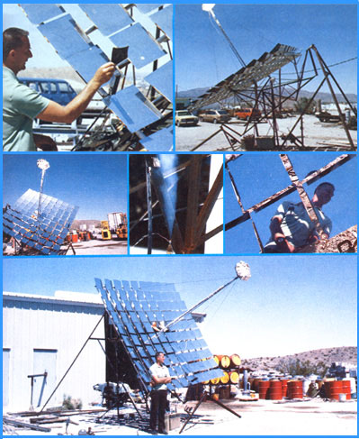

ABOVE, LEFT: Charles Curnutt demonstrates the action that boom looks hot, you're right! It was running about of his ingenious $13.50 solar tracking mechanism. 1,600?F when this photo was taken. BELOW, CENTER: ABOVE, RIGHT: The backside of the Curnutt solar That's live steam . . . generated by the sun! BELOW, furnace may look like ""the running gears of a grass- RIGHT: Mr. Curnutt reflected in a few of his solar furhopper"" . . . but it's simple, rugged, and trouble- nace's mirrors. FAR BELOW: ""Send on the sunshine,"" free. BELOW, LEFT: If you think the boiler on the end of says Charles Curnutt, ""1'm ready for the Solar Age.""